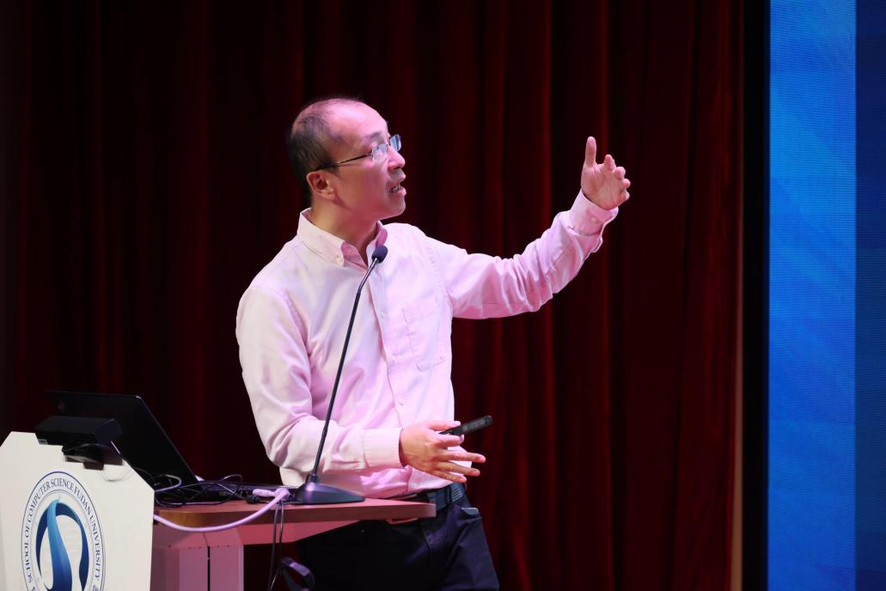

10月19日起，计算机科学技术学院举办以“智赋能·赢未来”为主题的学科周，开展了包括步青讲坛、学术前沿报告会、实验室开放日、科普实践等在内一系列活动，精彩纷呈，让我们一起来看看第二辑回顾。
师生校友活动
第一届1024校友节暨人工智能行业分享交流会
2023年10月28日下午，江湾“遇”校友，“智”启新未来——复旦大学计算机科学技术学院第一届1024校友节暨人工智能行业分享交流会在江湾校区二号交叉学科楼举行。学院院长杨珉、党委副书记沈安怡、副院长吴杰以及百余名校友参与了此次活动。
杨珉首先代表学院对校友的到来表示热烈欢迎。他介绍了复旦大学计算机学科的历史沿革和学院在人才培养、科学研究、产研合作等方面取得的显著成果，还介绍了学院在人工智能方向的研究基础以及近期布局。他表示，复旦大学计算机学院正沿着大家所期待的方向，向着更高水平发展。
学院96级校友、英特尔院士戴金权进行了题为“大模型的低比特计算和加速”的精彩演讲。他分析了大模型在计算、内存等方面的挑战，以及低比特运算在大模型中的应用和优势，分享了团队在该领域所做工作以及最新的技术进展，同时向大家提供了相关项目的开源实现。

学院03级校友、达观数据创始人兼董事长陈运文在线为大家带来了题为“人工智能落地应用的挑战与发展”的演讲。达观数据是一家为企业提供各类场景智能文本机器人的国家高新技术企业，陈运文以达观数据在服务客户中的实践为例，深入浅出地讲解了大语言模型在各种场景下的应用方式，分享了公司在实践过程中的一些经验和心得。
众多校友表示，在此次分享交流会中收获颇丰。学院01级校友文凌说到：“此次交流分享会中，科学研究、商业应用两方面的主题分享所富有的深度和新意，以及自由互动的多元化信息，对于大家来说都是可以无尽吸收的能量，尤其是对创业初期的自己，更是宝贵的智慧食粮。”04级校友张智勇表示，学院这次活动以“人工智能”这样一个与各行各业都会紧密相关的话题为基础，促使有机会碰撞出在自己所在行业的应用灵感，时间不长，但却的确听之有物，论之聚焦。
学术报告
编程语言和科学计算
10月29日下午，“编程语言和科学计算”青年学者学术报告会，在江湾校区二号交叉学科楼A4009报告厅举行。报告会由复旦大学计算机科学技术学院副教授陈阳主持，复旦大学化学系教授张颖、复旦大学计算机科学技术学院副教授徐辉作报告。
张颖作题为“密度泛函方法：联结实验与结论、宏观与微观的桥梁（基于Rust语言的高性能电子结构程序）”的学术报告。他介绍了密度泛函方法的背景、重要性、发展历程，和密度泛函方法的计算模拟发展的基础，然后就密度泛函理论计算模拟在化学学科领域研究的应用做出具体讲解，介绍了团队自主开发的、基于Rust语言的高校通用电子结构计算和开发软件包。张老师指出，密度泛函理论的应用是高度的学科交叉和深度融合的过程。
徐辉作题为“Rust语言:功能特性和趋势分析”的学术报告。他从Rust语言的核心特性和设计初衷出发，介绍了其可靠性和高效性在实际应用当中的优势，并以Rust在科学研究及其它相关领域的实际应用为例进行演示。此外，他还介绍了Rust的易用性现状与原因，总结了Rust的优劣及其发展现状和未来趋势。徐老师指出，尽管目前存在易用性的局限，但在安全性和高效性的支持下，Rust未来将继续发展。
本次学术报告会紧紧围绕着Rust语言程序设计、学科交叉研究的主题，从Rust语言原理、发展等基础知识，到计算机与化学学科交叉应用的研究实例，让与会者有了全面、深入、透彻的理解，揭示了编程语言的发展和编程语言赋能交叉学科研究的魅力。
科普活动
人工智能科普与实践
10月30日下午，“人工智能科普与实践”活动在邯郸校区逸夫楼302机房开展。该场活动由复旦大学计算机科学技术学院冯红伟老师主导，目的是让初步接触人工智能技术的学生了解如何开展人工智能方向的实践性编程和开发。
针对这些学生编程基础还比较薄弱、对人工智能理论的学习还不深入的特点，讲座主要以大厂的人工智能平台作为突破口，通过对AI智能云平台上的AI开放能力的介绍，让学生了解利用人工智能平台的能力能够完成的项目，并且针对多数新生编程还不熟练的特点，介绍了图形化的编程平台来快速体验人工智能的输出结果。实践课程首先对国内的AI智能云平台进行了介绍，对这些平台所提供AI能力进行了介绍，对语音技术、文字识别、人脸与人体、图像技术、语言与知识等常见模块所能够提供的典型AI开发结果进行了介绍，针对人体关键点识别这一领域，对应用注册、appkey以及应用的访问鉴权生成、免费资源领取的方法，然后针对平台所提供的开发文档，对请求地址、请求参数的准备、返回结果及从json格式的返回结果中提取所需的结果。课程还大致介绍了利用人体关键点坐标来设计一些典型人体姿态检测的模型，针对投篮姿势、仰卧起坐如何进行建模进行了讲解。最后针对建模过程中如何消除人体关键点在图像上的绝对坐标值对建模的影响进行了讨论，对大致的python编程方法进行了梳理。在课程的第二部分，同学们下载了图形化的编程工具，利用图形编程工具快速实现了人体关键点识别、物品识别、人脸识别等典型人工智能的应用，让同学们快速了解了人工智能的成果输出，激发了同学的学习兴趣，并启发了同学在开展人工智能应用方面的创新性思维。
最后，冯老师和同学进行了交流，对如何应用AI解决生活中的实际问题、用哪些软硬件平台进行开发给出了总体方案。同学们表示实践活动收获满满，对今后开展人工智能的开发起到了很好的引导作用。
人工智能科普讲座
10月30日晚上，“人工智能科普讲座——过去、现在与未来”在邯郸校区第四教学楼201教室开展。该场讲座面向全校各专业学生，由复旦大学计算机科学技术学院张军平教授主讲。
讲座从人工智能应用说起，再到行业内的竞争，人工智能的历史和经典的网络架构，随后进入ELIZA效应、涌现效应这些难以解释的现象，还介绍了人工智能常见的研究方法和现状，最后以人工智能当今的局限和对混合智能的展望作结。为了让同学们能够更好地理解人工智能对我们时代的影响，张老师提到很多接近生活的例子。讲座结束，在场听众提出涉及人工智能在科学研究上的应用、人工智能的安全性、人工智能和现实生物的关联等问题，张老师对这些问题做出了详细的解答，大家纷纷表示收获满满。
学科展
以“智赋能·赢未来”为主题，计算机科学与技术学科风采展在邯郸校区光华楼三楼大厅展出。这一展览为期一周，共计展示34项科研、教学、获奖等内容丰富的成果，较全面地展示了近几年在学科建设各方面的成效。
复旦大学计算机学科创建于中国计算机事业的起步期，始于 1956 年自主建造的国内第一台电子模拟计算机。1975 年，复旦大学成立计算机科学系。2008 年，学校整合校内计算机学科力量，成立计算机科学技术学院。学科在中国计算机教研发展中创造了多项第一，长期勇立计算机科技创新的潮头。
学院有“计算机科学与技术”、“网络空间安全”、“国家安全学”三个一级学科，计算机科学与技术一级学科设有6个学科方向，包括人工智能、大数据与数据科学、智能化软件工程与系统、人机交互与协同计算、智能网络与系统、计算机理论与前沿交叉。网络空间安全一级学科设有6个学科方向，包括网络空间安全基础与前沿交叉、密码学、智能系统安全、互联网技术与智能监管、金融科技与安全、多媒体智能安全。国家安全学一级学科主要开展国家安全技术方向研究。
学科特色鲜明、学术水平高，在若干方向上取得了有国际影响力的学术成果，在国家关键领域的重要任务中持续做出了贡献。近年来，学院承担了国家重大专项、重点研发计划、国家自然科学基金重点项目及上海市重大科技攻关计划等大量科研项目，在高质量学术论文数量方面取得了显著进步，并连续获得省部级及以上科技成果奖励。
此次展览吸引了全校各专业师生驻足参观，大家对计算机科学与技术的研究项目和科技创新成果有了更直观、生动的认识。